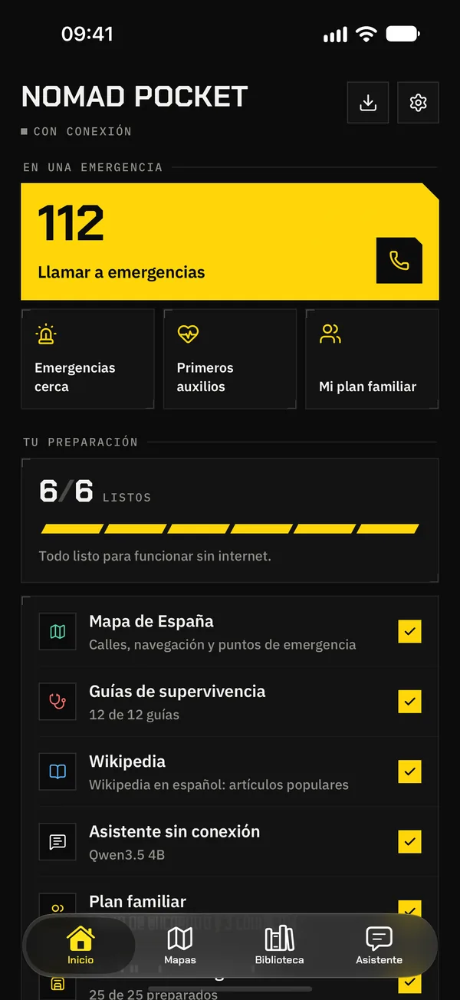
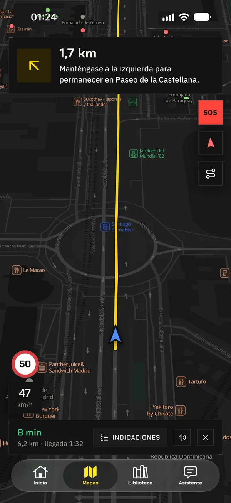
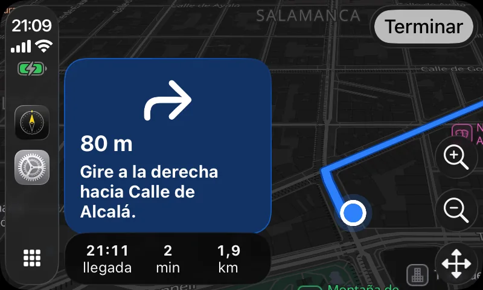
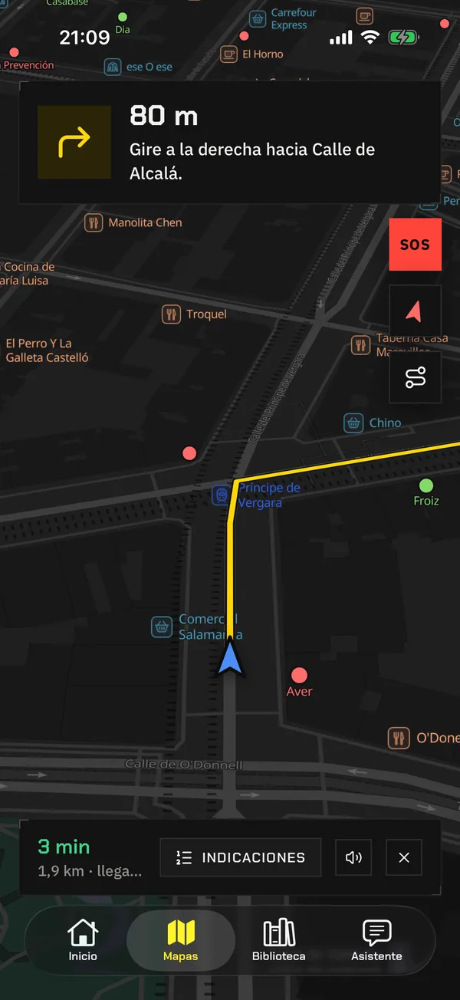
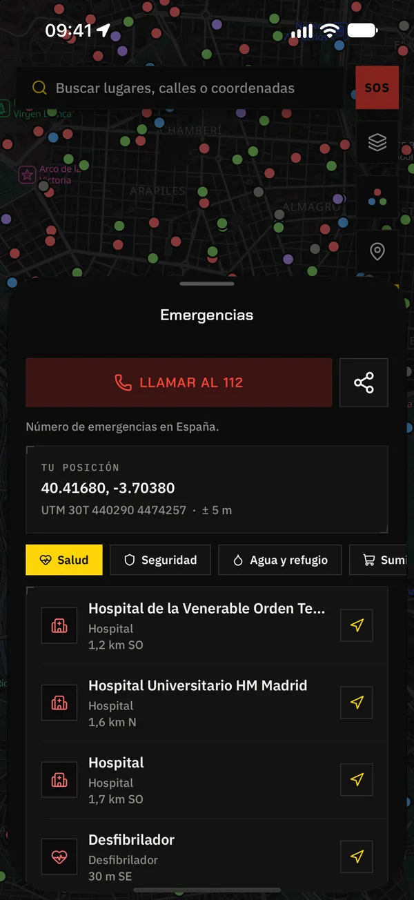
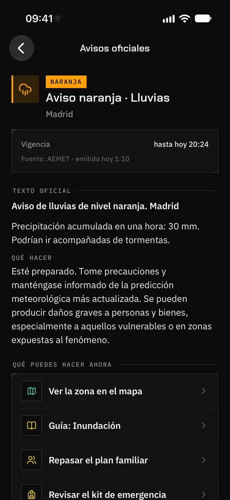
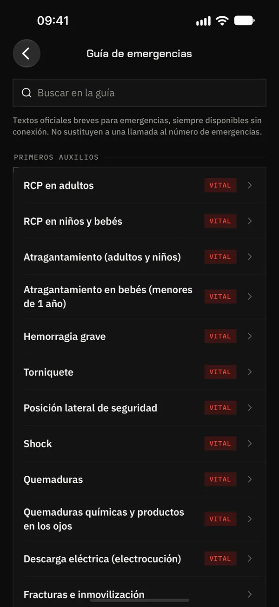
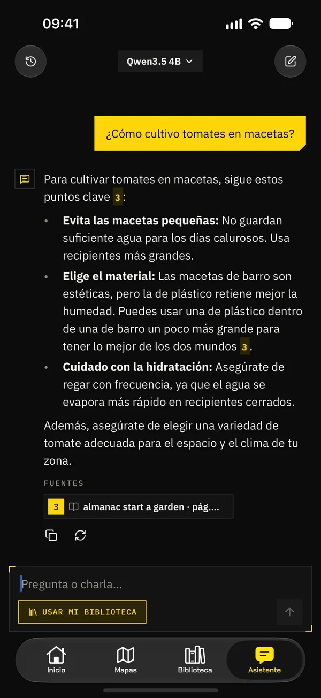
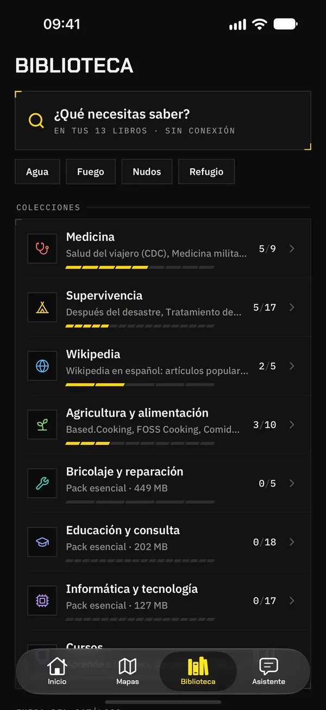
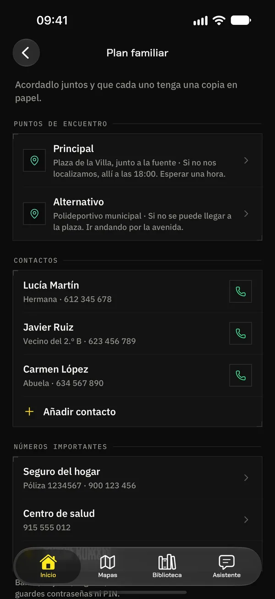

Apagón
Sin luz, las antenas aguantan poco. Tus mapas, tus guías y tu plan siguen en el móvil.
Sin conexión · todo funciona
Lo preparas hoy con conexión y mañana funciona sin internet, sin cobertura y sin luz. Con navegación en CarPlay, hospitales cercanos, avisos oficiales, Wikipedia, cursos y una IA que vive en tu teléfono. Gratis y de código abierto.


01 / Por qué
28·04·202512:33 · Península Ibérica
Aquel lunes, España y Portugal se quedaron sin luz durante horas. Sin electricidad, las antenas de telefonía aguantaron lo que les duraron las baterías, y muchos móviles se quedaron sin datos ni cobertura: sin mapas, sin buscador, sin forma de consultar qué hacer.
Un apagón, un ciberataque, una tormenta o un fallo informático masivo bastan para dejar el móvil mudo justo cuando más falta hace. Nomad Pocket guarda lo esencial en el propio teléfono, para que siga funcionando cuando todo lo demás falla.
Sin luz, las antenas aguantan poco. Tus mapas, tus guías y tu plan siguen en el móvil.
Falla tu operador o un gran servicio en la nube. Nada de lo que llevas depende de ellos.
Si atacan las redes o los servicios que usas, lo tuyo sigue en tu teléfono, intacto.
Mientras hay red, los avisos oficiales te dicen lo que viene; cuando el temporal la tumba, sabes dónde está el hospital, la farmacia o el agua.
Montaña, mar, una carretera perdida: rutas y respuestas sin una sola barra de señal.
En otro país, sin roaming ni tarjeta local, con su mapa y el número de emergencias del país en el que estás.
Red: ConectadoSin conexión
Tus mapas, guías y respuestas están en el móvil, no en un servidor: si la red cae, no dependen de ella.
02 / Qué llevas en el bolsillo
Todo lo que buscarías en internet en una emergencia, descargado de antemano y listo para usar sin red.
Mapas y navegación
Tu país entero en el móvil: cada calle, camino y edificio. Calcula rutas en coche, a pie o en bici sin red, con indicaciones por voz que siguen guiándote con la pantalla bloqueada y una ruta nueva si te sales. Con los dos países descargados, una sola ruta cruza la frontera.
CarPlay
Conecta el iPhone y Nomad Pocket aparece en CarPlay: el mapa sin conexión y la navegación giro a giro en la pantalla del coche, con indicaciones por voz. También sin cobertura, en mitad de la carretera.
CarPlay: en iPhone.


Emergencias
Hospitales y centros de salud, farmacias, desfibriladores, policía, bomberos, agua potable, refugios, gasolineras, supermercados y embajadas: lo más cercano primero, con la distancia y la dirección. Un toque y te lleva hasta allí.

Avisos oficiales
Cuando AEMET, MeteoAlarm u otro servicio oficial emite un aviso naranja o rojo para tu zona, o hay un terremoto fuerte cerca, te llega una notificación en cuanto se publica, para que te prepares mientras aún hay conexión.
Nomad Pocket no emite avisos. En una emergencia, sigue las alertas de tus autoridades y llama al número de emergencias.

Guía de emergencia
Más de 200 fichas basadas en fuentes oficiales: reanimación, hemorragias, quemaduras, atragantamiento, incendios, inundaciones… En la app desde el primer minuto, sin descargar nada.
Primeros auxilios e información médica: en iPhone y iPad. En Android, el resto de la guía.

Asistente sin conexión
Pregúntale «¿cómo potabilizo agua?» en mitad de la nada: responde con tu biblioteca, la guía y tu plan, y te enseña las fuentes. Funciona en tu teléfono, con un modelo abierto que descargas o, en los iPhone con Apple Intelligence, con el modelo de Apple. En Android, con un modelo que descargas.
Respuestas de salud y primeros auxilios: en iPhone y iPad.

Biblioteca
Wikipedia en español o en inglés, de sus 50.000 mejores artículos a la enciclopedia entera, según tu espacio. 80 archivos de supervivencia, agua y alimentos, agricultura, reparaciones y más, guías en PDF, y miles del catálogo de Kiwix.

Plan y mochila
Puntos de encuentro en el mapa, contactos, números importantes y notas de la casa, también en PDF para imprimir. Y una mochila de emergencia a la medida de tu hogar, con avisos de caducidad.

03 / Cómo funciona
Prepáralo hoy, mientras tienes conexión. Mañana no hará falta.
La app te propone un kit a la medida de tu país y del espacio de tu teléfono: mapa y rutas, guías, Wikipedia y asistente. Y te pregunta si quieres avisos oficiales.
Déjalo descargando con la app abierta. Inicio te dice lo preparado que estás y lo que falta, para completarlo mientras aún hay red.
En modo avión, en un apagón o en mitad del monte. Y cuando haya versiones nuevas de tus mapas, archivos o cursos, te avisa y las actualiza sin perder la copia antigua.
04 / Tuya y de nadie más
Tu plan, tus contactos y tus preguntas no salen de tu móvil, y tu ubicación tampoco, salvo que la compartas o actives los avisos oficiales. Mapas, guías, biblioteca y asistente no dependen de ningún servidor, así que no hay nada que pueda caerse. Solo los avisos oficiales al momento, si los activas, usan un pequeño servidor nuestro que no sabe quién eres: únicamente conoce la cuadrícula de unos 10 km en la que estás.
Nomad Pocket es software libre (GPL‑3.0) inspirado en Project N.O.M.A.D. Puedes leer cada línea, proponer cambios o compilarla tú. Se apoya en datos abiertos:
Nomad Pocket es un proyecto independiente: no está afiliada a Crosstalk Solutions (Project N.O.M.A.D.) ni a estos proyectos y organismos, ni cuenta con su respaldo.
05 / Preguntas
Sí. Solo necesitas conexión para descargar el contenido (mejor con wifi) y para buscar actualizaciones. Después, mapas, rutas, búsqueda de calles, puntos de emergencia, guía, biblioteca y asistente funcionan en modo avión. Solo los avisos oficiales necesitan conexión para llegar.
Sí. El GPS recibe la señal de los satélites, no de internet, así que el mapa te sitúa aunque no haya cobertura. La primera posición puede tardar algo más que con datos.
Sí, si activas los avisos oficiales. Muestra los avisos que publican AEMET (España), el Servicio Meteorológico Nacional de Estados Unidos, MeteoAlarm (35 países europeos) y GDACS en el resto del mundo, además de los terremotos de USGS y EMSC, y te notifica los naranjas y rojos de tu zona en cuanto se publican. Los avisos necesitan conexión para llegar. Nomad Pocket no emite avisos: en una emergencia, sigue las alertas de tus autoridades en el móvil y llama al número de emergencias.
Tú eliges. El asistente de bienvenida propone un kit para tu país y tu espacio libre (mapa y navegación, guías esenciales, Wikipedia y asistente) y puedes desactivar cada pieza. Un país ocupa desde menos de 1 MB (una isla pequeña) hasta unos 11 GB (Alemania); España, unos 4,7 GB. Estados Unidos, Canadá y Rusia van por regiones. La app te dice el tamaño exacto antes de descargar.
Sí. Al conectar el iPhone al coche, Nomad Pocket aparece en CarPlay con el mapa de tu país: busca destinos, encuentra emergencias cercanas y te guía por voz, todo sin conexión. Android Auto todavía no.
Hay mapas de 241 países y territorios, y rutas, búsqueda de calles y puntos de emergencia en 233; un mapa mundial viene incluido desde el primer segundo. Estados Unidos, Canadá y Rusia se descargan por regiones. En más de 25 países, las farmacias, hospitales y centros de salud se completan con registros oficiales. La app y su biblioteca están en español e inglés (tus propios archivos ZIM pueden estar en cualquier idioma).
No hay truco: es gratis, sin anuncios, sin compras y sin suscripciones. Es un proyecto de código abierto que no vive de tus datos: no hay nada que cobrar ni nada que vender.
iPhone y iPad con iOS 16.4 o posterior. Android 8.0 o posterior, muy pronto en Google Play. El asistente usa un modelo abierto que descargas desde la app (desde 533 MB; los más grandes necesitan más memoria) o, en los iPhone y iPad que lo tienen, Apple Intelligence.
Está en prueba cerrada en Google Play y se abrirá a todo el mundo cuando Google la apruebe, con mapas, rutas, emergencias, biblioteca, plan y asistente. Los primeros auxilios y la información médica solo están en iPhone y iPad.
No hay cuentas, ni analítica, ni publicidad, ni rastreo: lo que haces en la app se queda en tu dispositivo. Lo único que guardamos es para los avisos oficiales al momento, si los activas: el identificador de notificaciones del móvil y la cuadrícula de unos 10 km en la que estás (nunca tu posición), que se borran al desactivarlos. Los detalles, en la política de privacidad.
No. Te ayuda cuando no hay red, pero la IA puede equivocarse y la información médica no sustituye a un profesional. Los avisos oficiales no sustituyen a las alertas de tus autoridades en el móvil. Si puedes, llama siempre al número de emergencias.
Gratis, de código abierto y listo en un minuto. Funciona cuando todo lo demás falla.
Escríbenos o abre una incidencia: respondemos a todo.